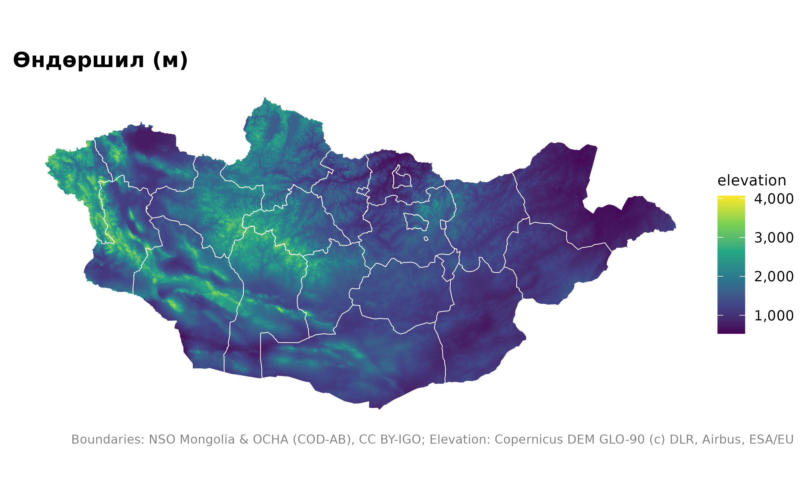
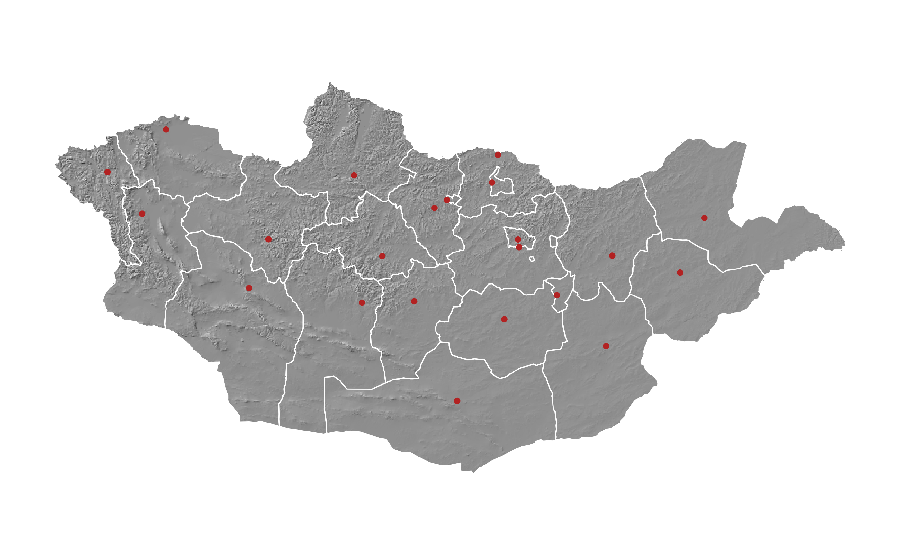
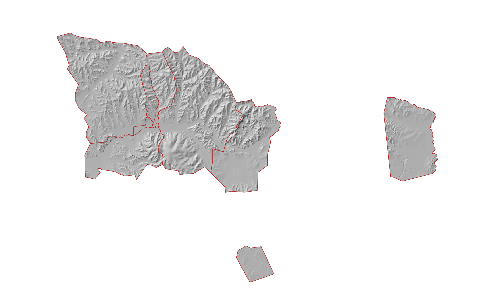
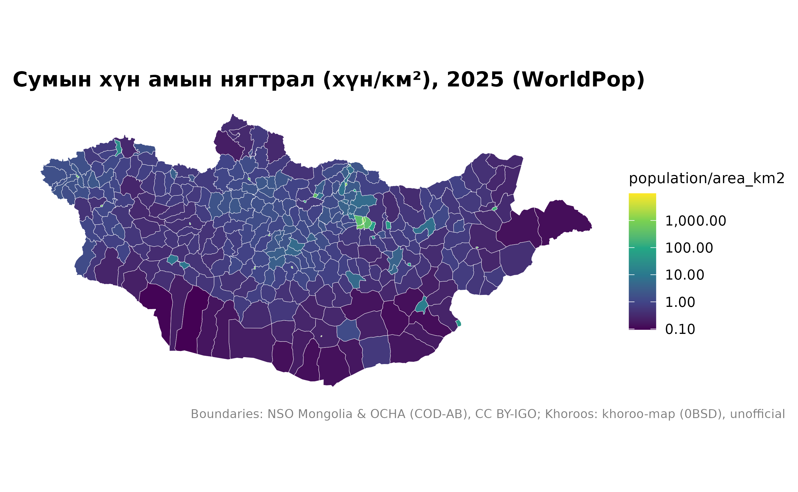

Гадаргуу, газрын бүрхэвч, хүн ам, тусгай хамгаалалттай газар
Source:vignettes/articles/terrain-population.Rmd
terrain-population.Rmd
library(mongolmaps)
library(ggplot2)
options(mongolmaps.lang = "mn")Эдгээр давхарга нь растер (нүдэн тор) бөгөөд terra
багцын SpatRaster хэлбэрээр ирнэ. Улсын 1 км-ийн торыг нэг удаа татаж
хадгална; илүү нарийн торыг нэг газраар нь үүлнээс шууд уншина.
| Функц | Нарийвчлал | Эх сурвалж |
|---|---|---|
mn_elevation(), mn_hillshade()
|
1 км (улсаар), 90 м (газраар) | Copernicus DEM GLO-90 |
mn_landcover() |
1 км (улсаар), 10 м (газраар) | ESA WorldCover 2021 |
mn_population() |
1 км, 100 м; 2015-2030 он | WorldPop |
mn_map() растерийг ч зохих өнгө, эх сурвалжийн
тэмдэглэлтэй зурна.
Гадаргуу
mn_map(mn_elevation(), title = "Өндөршил (м)") +
geom_sf(data = mn_aimags(), fill = NA, colour = "white", linewidth = 0.2)
Рельефийн сүүдэр бусад давхаргын дэвсгэрт тохиромжтой:
mn_map(mn_hillshade(), caption = FALSE) +
geom_sf(data = mn_aimags(), fill = NA, colour = "white", linewidth = 0.3) +
geom_sf(data = mn_settlements(type = c("capital", "aimag_centre")), colour = "firebrick", size = 1)
Нэг газарт 90 м-ийн нарийвчлалаар:
mn_map(mn_hillshade("90m", within = "Улаанбаатар"), caption = FALSE) +
geom_sf(data = mn_ub_districts(), fill = NA, colour = "firebrick")
#> Warning: Raster pixels are placed at uneven horizontal intervals and will be shifted
#> ℹ Consider using `geom_tile()` instead.
#> Raster pixels are placed at uneven horizontal intervals and will be shifted
#> ℹ Consider using `geom_tile()` instead.
Хүн ам
mn_zonal() торыг дурын олигоноор, жишээ нь сумаар
нэгтгэнэ:
pop <- mn_population(2025)
soums <- mn_zonal(pop, mn_soums(), name = "population")
mn_map(soums, fill = population / area_km2, trans = "log10",
title = "Сумын хүн амын нягтрал (хүн/км²), 2025 (WorldPop)")
Тусгай хамгаалалттай газар
Дэлхийн тусгай хамгаалалттай газрын мэдээллийн сан (WDPA)-г дахин тараах эрхгүй тул анх ашиглахад UNEP-WCMC-ээс татна:
pa <- mn_protected_areas()
mn_map(mn_aimags(), caption = FALSE) +
geom_sf(data = pa, aes(fill = desig_eng), alpha = 0.6, colour = NA) +
labs(fill = NULL, caption = mn_citation(c("admin", "wdpa")))